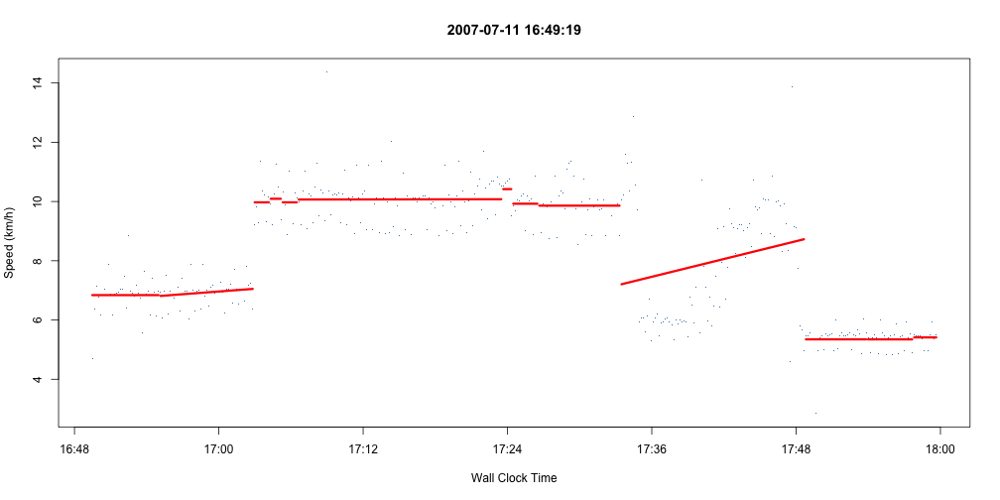

When Nike+ tells me how fast I'm going it looks like this:

Rick Osborne
rickosborne.org
When Nike+ tells me how fast I'm going it looks like this:
source('nikeplus.R')
plus <- read.nikePlus(file.path('xml', '2007-07-11 20;59;57.xml'))
head(plus@intervals[,c("distanceKM","durationMin","diffKM","speedKPH")])
## distanceKM durationMin diffKM speedKPH
## 1 0.0000 0.0000 NA NA
## 2 0.0130 0.1667 0.0130 4.680
## 3 0.0307 0.3333 0.0177 6.372
## 4 0.0505 0.5000 0.0198 7.128
## 5 0.0693 0.6667 0.0188 6.768
## 6 0.0864 0.8333 0.0171 6.156
plotNike(plus@intervals, minimumPoints=5, windowSize=7, title=plus@time)
